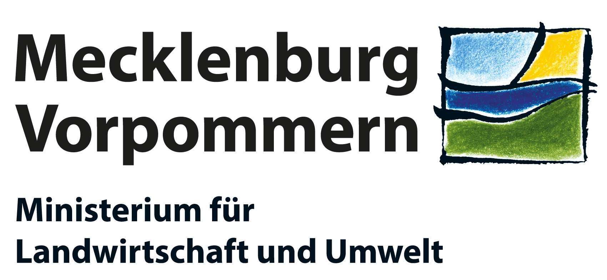

Familienpraxis-Behrendt
Liebe Patientinnen und Patienten,
ein herzliches Willkommen in unserer Familienpraxis!
Wir freuen uns darauf, Sie und Ihre Familie in allen Fragen zu begleiten, denn Ihre Gesundheit liegt uns am Herzen.
{{ site.phone }}
{{ site.email }}
{{ site.address }}



Hier investiert Europa in die ländlichen Gebiete.
Inhalt der Förderung: Basisdienstleistungen zur Grundversorgung der ländlichen Bevölkerung
Ziel der Förderung: Förderung der lokalen Entwicklung in ländlichen Gebieten